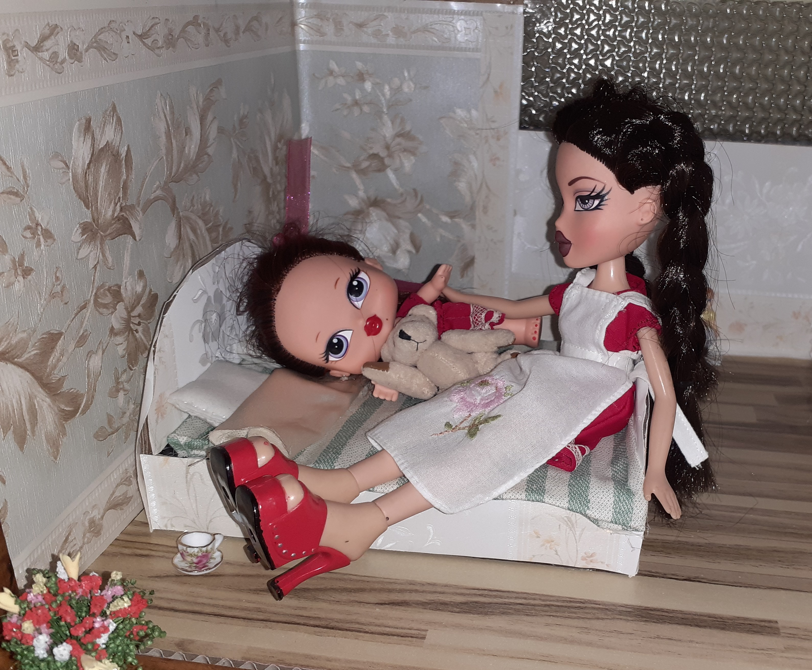

Colette and Amélie
Colette is Front of House.


She is Remy's wife.
Their daughter Amélie loves to help her mother.
(slide the pink circle to see both photos)
Remy and Fleur
Remy is Chef.
The restaurant is his vision, supported by his family.
His daughter Fleur loves to cook with him.
Cecile
Cecile is Sommelier.
She is Colette's younger sister, training to become a Master Sommelier.
Her preference is an oaked Chardonnay.
(use the pink magnifying glass to see more detail)